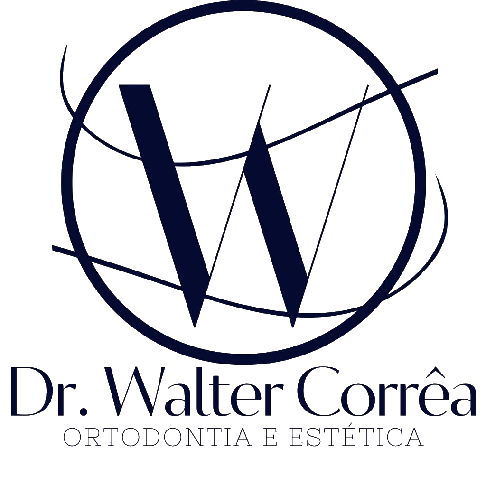

Na Clínica Dr. Walter Corrêa, priorizamos o cuidado dos pacientes,
oferecendo soluções odontológicas e estéticas. Nosso foco é
proporcionar um atendimento humanizado, visando o bem-estar geral e a
melhora da autoestima através de um sorriso radiante.


Dr. Walter Correa aaaaa
Formado na UFMG e com pós-graduação na PUC MG, possui 28 anos de experiência em ortodontia e ortopedia funcional de maxilares. Ele concluiu um curso de especialização com 2.100 horas e obteve participação em sete congressos nos EUA e um no Canadá como membro da Associação Americana de Ortodontia. Além disso, atuou como professor de pós-graduação em ortodontia na Universidade Vale do Rio Doce (Univale) por 5 anos.